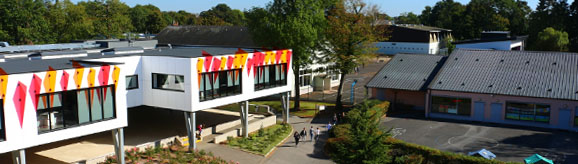
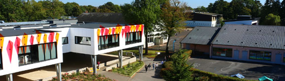
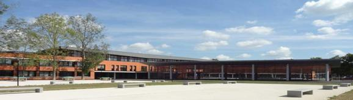
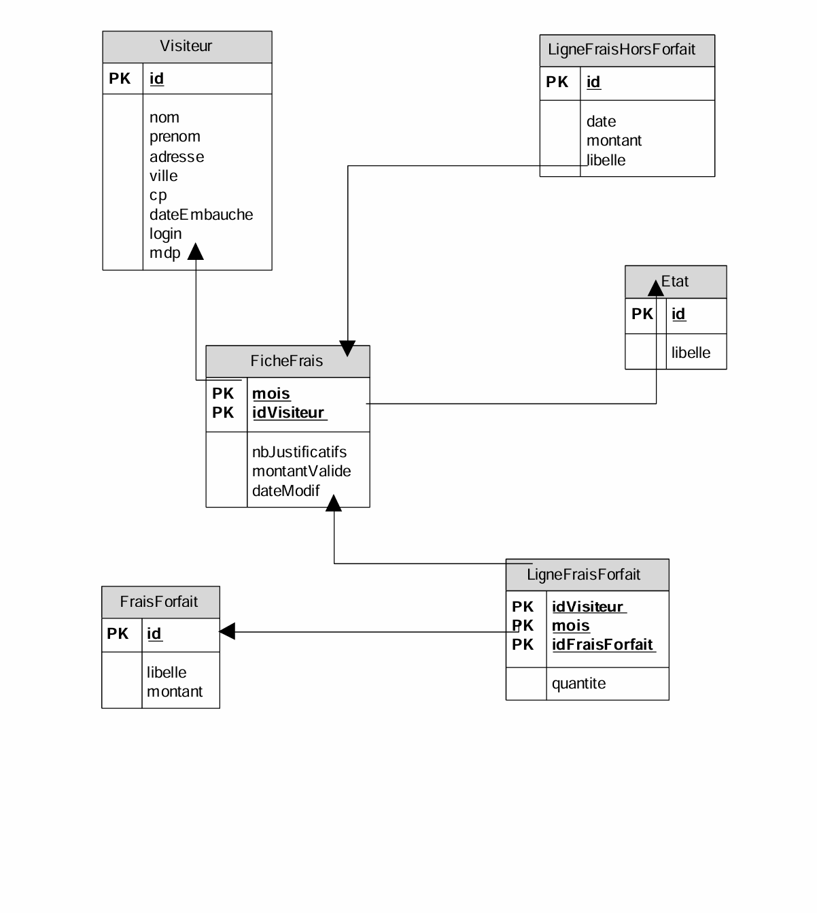
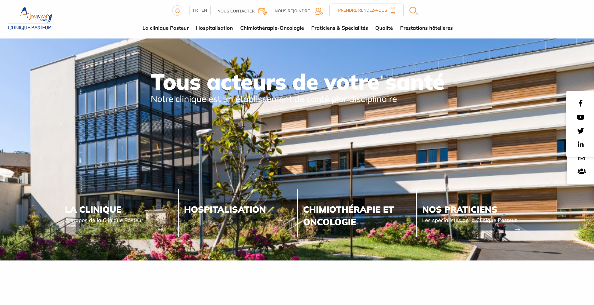

Bac Gestion administration
Le Bac Gestion-Administration forme des assistants de gestion. Ils assurent le suivi administratif, commercial et comptable d’une organisation.

Né en septembre 2004, j’ai 20 ans et je suis un étudiant passionné par l’informatique, curieux de nature et toujours prêt à apprendre. Mon objectif est clair : devenir autonome professionnellement en construisant des compétences solides, utiles et durables dans le domaine du numérique. Convaincu que l’apprentissage par la pratique est bien plus formateur que la théorie seule, j’ai choisi la voie de l’alternance. Cette méthode me permet non seulement de renforcer mes connaissances techniques, mais aussi de les appliquer concrètement en entreprise, jour après jour. J’aborde chaque nouveau défi comme une occasion d’évoluer, et je suis motivé par l’envie de créer, de comprendre et de construire mon avenir avec détermination.
Le Bac Gestion-Administration forme des assistants de gestion. Ils assurent le suivi administratif, commercial et comptable d’une organisation.
Le BTS MCO forme des commerciaux polyvalents. Ils gèrent la relation client en physique, à distance et en ligne.
Le BTS SIO option SLAM forme des développeurs d'applications. Ils créent, testent et maintiennent des solutions logicielles pour les entreprises.

La Clinique Pasteur de Ris-Orangis est un établissement privé du groupe Almaviva Santé, spécialisé en oncologie et soins de suite. J’y ai effectué un stage de développement web en 2025, contribuant à la refonte du site interne et à l’amélioration des outils numériques pour les professionnels de santé.
📍 Adresse : 17 avenue de Rigny, 91130 Ris-Orangis
🌐 Site web :
www.clinique-pasteur-risorangis.fr
Voici des projets récents réalisés durant mes deux stages:
J'ai réalisé une Modélisation Conceptuelle de Données (MCD) sur Looping afin d'obtenir un modèle d'analyse détaillé, après m'être vu confier une tâche à accomplir.
Réalisation d'un site web pour une entreprise afin de présenter l'entreprise , prendre rendez-vous ou pour les contacter.
Réalisation d'une base de données qui a pour but de centraliser et d'organiser toutes les informations médicales et administratives liées aux patients, médecins, rendez-vous, consultations et documents médicaux de la clinique.

Réalisation d'un gestionnaire de fiche frais pour les visiteurs.

Je m'intéresse particulièrement aux évolutions dans le domaine de l'intelligence artificielle. Voici un sujets récents que j'ai explorés :

Vous pouvez également télécharger mon CV en cliquant sur le bouton ci-dessous :
📄 Télécharger mon CV (PDF)Pour me contacter, envoyez un e-mail à bulutilhan6@gmail.com ou appelez-moi au +33 06 38 03 16 60